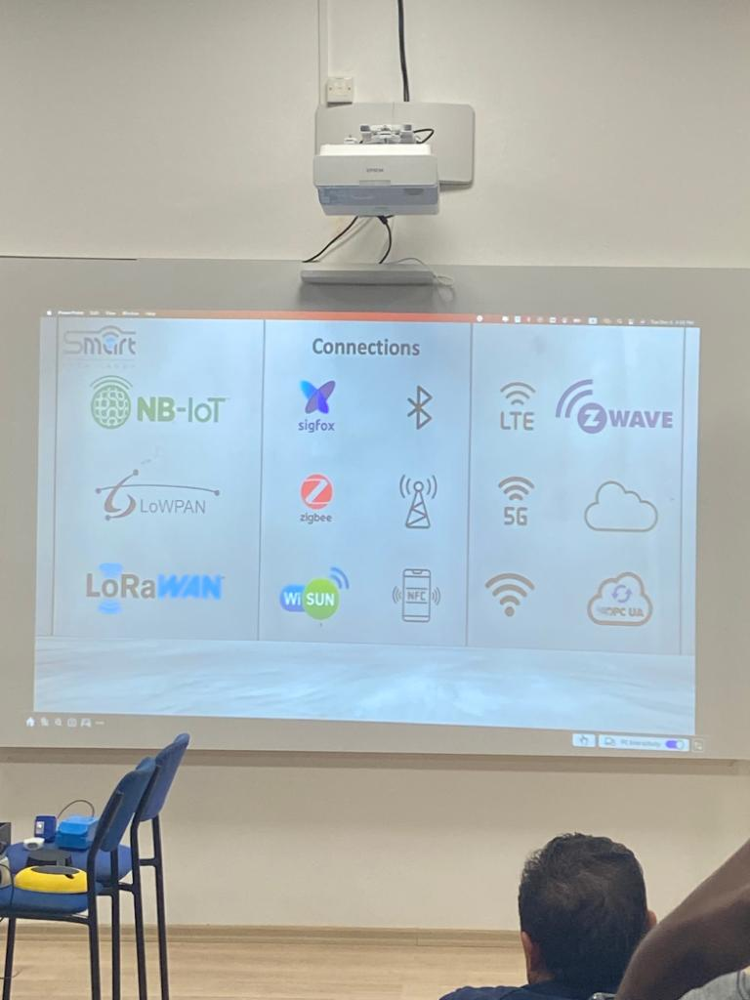

It was First Company in loT in Northern Cyprus
Research and Development in loT (Smart Home, Smart City, Security)
Speakers
KASRA ASSADI: Head of Marketing
• Industrial Engineering
•Specialist in B2B, 32C sales
•Experienced in sales and loT Marketing
BABAK REIHANI and he is the Founder of Smart Rasa
•Electronics Engineering
•Experienced in the design and construction of embedded systems
•Developing loT systems
• Renewable Energy Specialist
Topics Covered
Internet of things (IOT)
Brief history and evolution
Importants of IOT in the modern world
Brief History and Evolution
1.Birth of the Internet:Is the first IOT
J.C.R. Licklider envisions an interconnected computer network.
ARPANET's launch marks the birth of the internet.
1960s-1970s
2:Early loT Concepts Emerge
TCP/IP protocols by Vint Cerf and Bob Kahn.
First loT-like experiment: a vending machine connected to report inventory.
3.TCP/IP protocols by Vint Cerf and Bob Kahn.
First loT-like experiment: a vending machine connected to report inventory by David Nicolas
4.Internet Expansion and Web Development:
John Romkey connects the first toaster to the internet.
Cambridge's online webcam for coffee pot monitoring.
Tim Berners-Lee invented the World Wide Web.
5.John Romkey connects the first toaster to the internet.
Cambridge's online webcam for coffee pot monitoring.
Tim Berners-Lee invented the World Wide Web.
1990s-2000s
6.loT Takes Shape
Coining of the term "Internet of Things" by Kevin Ashton.
Introduction of LG's smart refrigerator and
Google's self-driving cars.
Emergence of smart cities like Seoul and Singapore.
2000s-2010
Importance of IoT in the Modern World
The Internet of Things (IoT) is becoming increasingly important in the modern world due to its numerous benefits and applications.
Here are some key reasons why IoT is important:
Efficiency and Automation: IoT enables the automation of various tasks and processes, leading to improved efficiency and productivity.
Enhanced Data Collection and Analysis: IoT devices collect vast amounts of data from various sources, such as sensors, wearables, and machines.
Improved Quality of Life: IoT has the potential to significantly improve the quality of life for individuals.
Smart Cities: IoT plays a crucial role in transforming cities into smart and sustainable environments.
Connectivity and Communication: IoT connects various devices, systems, and people, enabling seamless communication and collaboration.
How IOT Works
Internet of Things (IoT) is a concept that involves connecting everyday physical devices to the internet, allowing them to send and receive data. Here's a brief breakdown of how it works:
Sensors and Devices: Physical devices, like sensors or actuators, are embedded with technology to collect and exchange data. These devices can range from simple temperature sensors to complex machinery.
Connectivity: The collected data is transmitted over the internet or other communication networks. This can be done through various means, such as Wi-Fi, Bluetooth, cellular networks, or even satellite communication.
Data Processing: The data collected from these devices often needs to be processed to extract meaningful information. This processing can occur locally on the device itself or be transmitted to a central server or cloud for analysis.
Cloud Computing: In many IoT applications, data is sent to cloud servers for storage, analysis, and further processing. Cloud platforms provide the necessary infrastructure for handling large volumes of data and running complex algorithms.
User Interface: Users can interact with IoT devices and systems through applications or interfaces. This could be a web or mobile app that allows users to monitor and control connected devices remotely.
Architecture Layers of IOT
Device Layer (Perception Layer):
The device layer is where physical devices, sensors, and actuators reside.
Devices in this layer collect data from the physical world. Examples include temperature sensors, cameras, and actuators that control physical processes.
This layer is responsible for sensing and capturing real-world information.
CConnection Layer (Network Layer):
The connection layer facilitates communication between devices and the transfer of data.
It includes communication protocols and technologies such as Wi-Fi, Bluetooth, cellular networks, and more.
This layer ensures that devices can reliably send and receive data, forming the backbone of IoT connectivity./li>
Platform Layer (Middleware Layer):
The platform layer acts as an intermediary between the device layer and the application layer.
It includes components like message brokers, data storage, and communication protocols.
This layer manages the flow of data, addressing issues like data formatting, security, and scalability. It's crucial for handling the complexities of large-scale IoT systems.
Application Layer:
The application layer is where data is processed, analyzed, and transformed into meaningful insights.
It includes applications, analytics engines, and decision-making systems.
Users interact with the IoT system through interfaces in this layer, and actions or alerts are generated based on the analyzed data.

Benefits of IoT
1. Efficiency and Cost Savings: IoT enables automation and optimization of processes, leading to improved efficiency and cost savings.
2. Data Insights and Decision-making: IoT generates a massive amount of data from different sources, allowing organizations to gain valuable insights.
3. Enhanced Safety and Security: IoT can improve safety and security in various domains. For example, in smart homes, IoT devices can monitor for potential hazards.
4. Improved Quality of Life: IoT can greatly enhance the quality of life for individuals. For instance, wearable devices can monitor health parameters.
5. Environmental Sustainability: IoT can play a critical role in achieving environmental sustainability goals.
6. Connectivity and Collaboration: IoT facilitates seamless connectivity and communication between devices, systems, and people.
IOT in the Real World
Smart Homes
Smart homes we have:
Control Lighting
Power Controls
Energy Monitors
Security systems
Entertainment
Smart Irrigation
Smart Pool
Smart Cities
Smart cities we have:
Smart City and Resort
Irrigation System
Control Lightning
Asset Management
Monitor Manhole and Bins
Electricity and Water Metering
Smart Pool
Parking Management
Challenges of IoT
1. Security: With so many connected devices, the security of IoT networks is a major concern.
2. Interoperability: IoT devices and systems are often developed by different vendors, making it difficult to ensure interoperability.
3. Data Management: IoT generates vast amounts of data, which can be challenging to manage, store, and analyze.
4. Standardization: The lack of standardization in IoT is a significant challenge.
5. Power Consumption: IoT devices often rely on batteries, which can limit their lifespan.
6. Privacy: IoT raises concerns about privacy and responsible use of data.